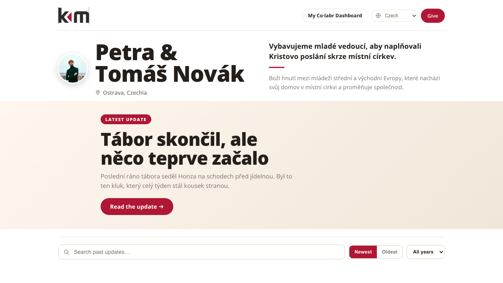
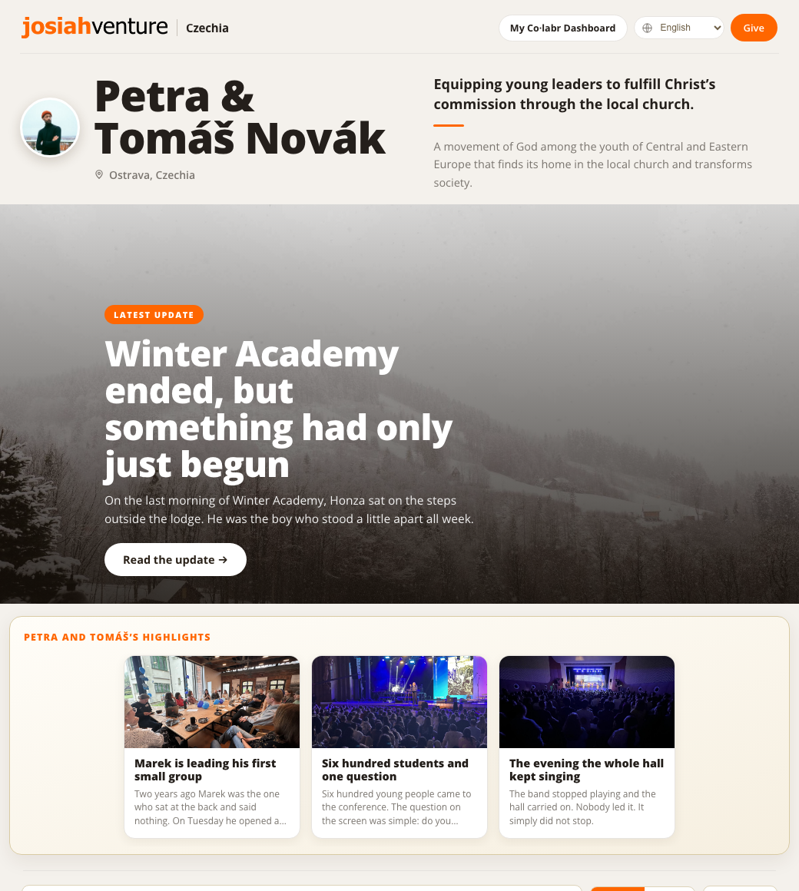
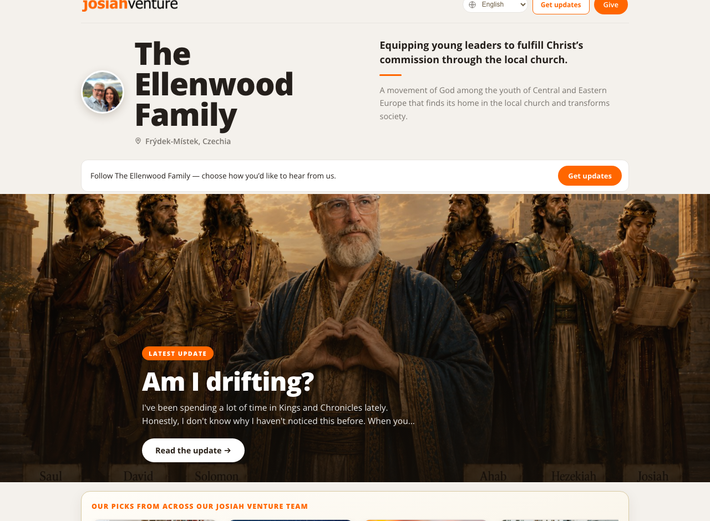

The gospel has always moved forward through people laboring together. This is the tour of how Co·labr keeps you and them in the same story, front stage and back.
Build each update from blocks: banner photo, story, pictures, video, key numbers, prayer and praise, giving, your own sign-off. Your organization's real brand colors are built in, a live preview shows exactly what supporters will see, and AI suggests titles people actually open.
Petra wrote this once, in Czech, on a February evening in the Beskydy mountains. Her team read it in Czech. Her supporters in Texas read it in English. Nobody pressed translate, and everybody got the whole story.
Poslední ráno Zimní akademie seděl Honza na schodech před chatou. Venku padal sníh. Byl to ten kluk, který celý týden stál kousek stranou.
Sedli jsme si vedle něj. Dlouho mlčel. Pak řekl: „Nevěděl jsem, že Bůh může mít rád i takového, jaký jsem.“
On the last morning of Winter Academy, Honza sat on the steps outside the lodge. Snow was falling. He was the boy who stood a little apart all week.
We sat down next to him. He was quiet for a long time. Then he said: “I didn’t know God could love someone like me.”
Videos carry subtitles the same way, ready before the update appears.


One page. One update. She wrote it once and never had to think about any of this. Her own team in her own country meets her organisation. The people who support her from abroad meet Josiah Venture. Everybody gets the whole story, clearly, in the language of their heart.
The wall isn't the open internet. It belongs to your support team. You invite people, approve anyone who asks, and every email they receive opens the wall like a key: no passwords, no accounts, nothing for your supporters to remember. Strangers see only a warm "ask to follow."

Under every update your people can tap I'm praying, write you a note, or give, routed through your organization's designated fund. And because everyone on the wall is known, you always know who's standing with you, and every note can be answered.
Everyone asks people to pray. Almost nobody circles back, so supporters carry your requests for years and never learn how the story ended. Co·labr closes that loop without adding an errand to your week. Every prayer you ask for is remembered along with everyone who prayed it. Later, while you're already writing, we ask about one older request. Answered, went another way, or still praying. The people who prayed for that exact thing hear back, by name. Nothing to keep, no guilt list; requests quietly retire after 90 days.
Then it gathers itself. On the 1st, the month's answered prayers and open requests arrive as a draft update, plus a fresh way of praying your mission, worded differently every month. And when a church asks "do you have any prayer requests?", you have one link ready: four categories, always current, drafted from updates you already wrote.
Bring supporters over with personal invitations or a CSV from your old tool, including your whole Mailchimp history, photos and all, so you can cancel that subscription. Then watch the picture: who's following and how, who asked to join, who visited the wall this week.
Every new page starts in test mode. Write, publish, experiment, import your people, and not a single email goes out until you deliberately flip "Go live." Even then, publishing tells you exactly how many people you're about to reach. No accidental sends, ever. (We learned this one the fun way.)